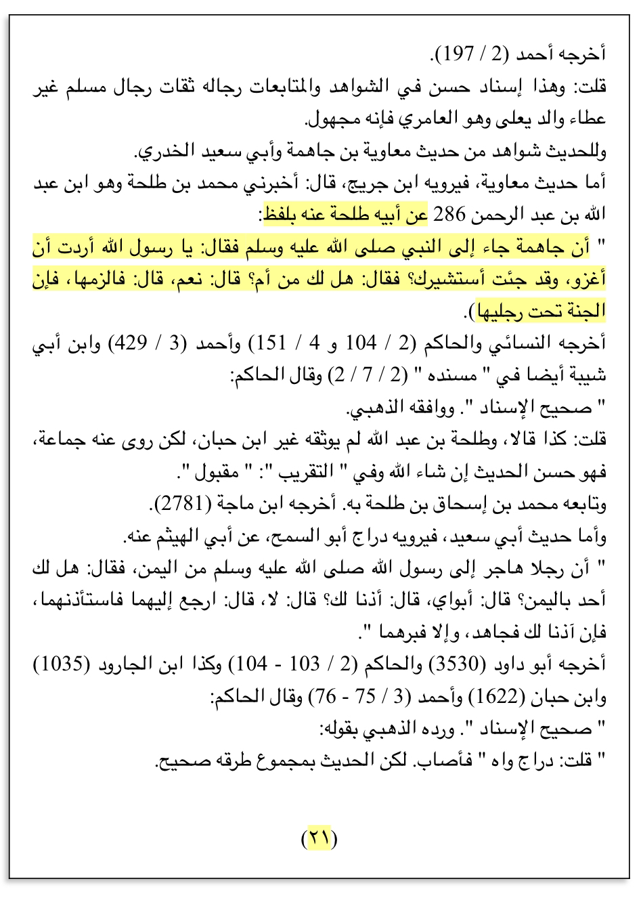
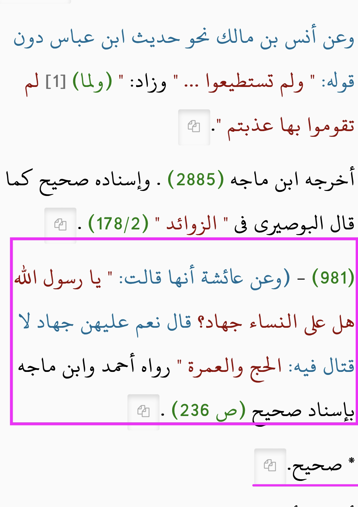
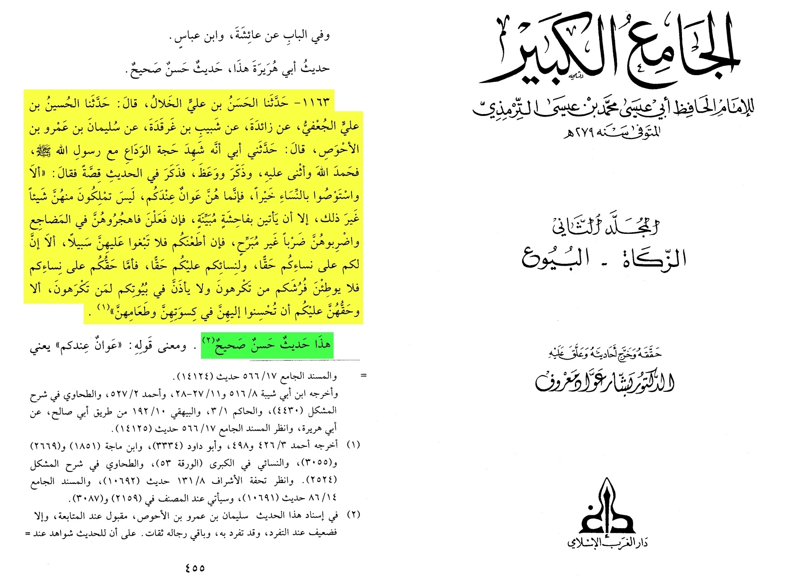
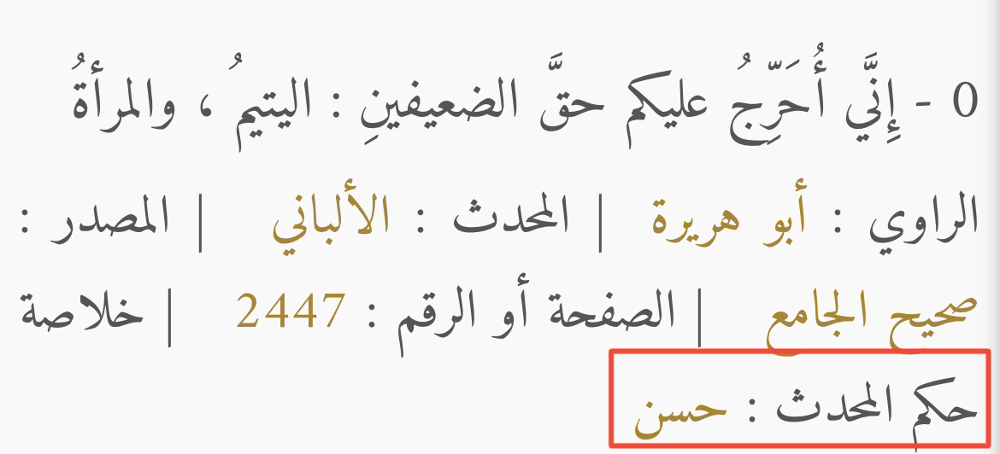
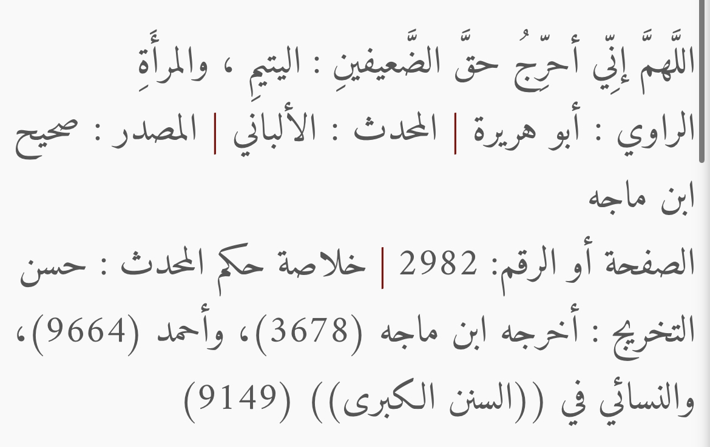
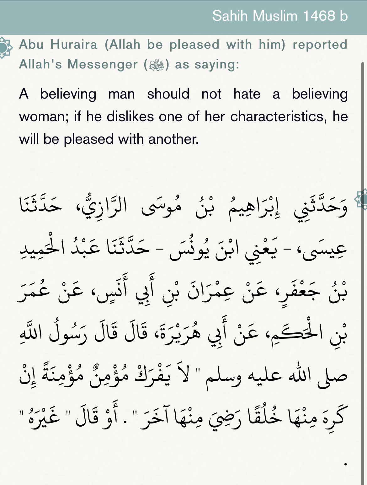
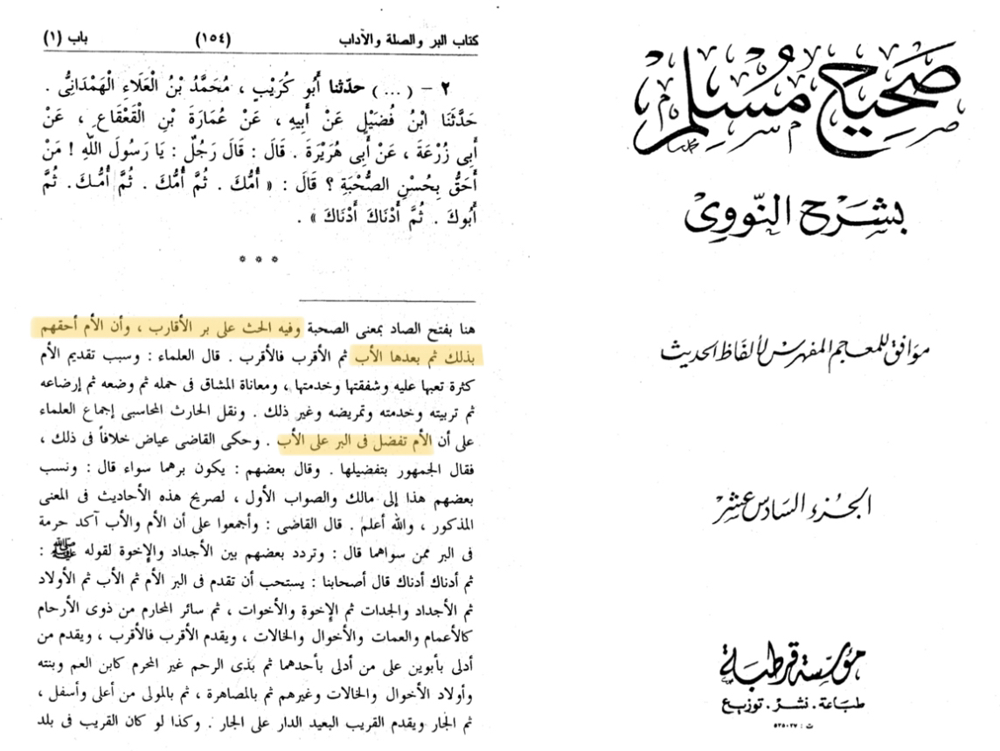
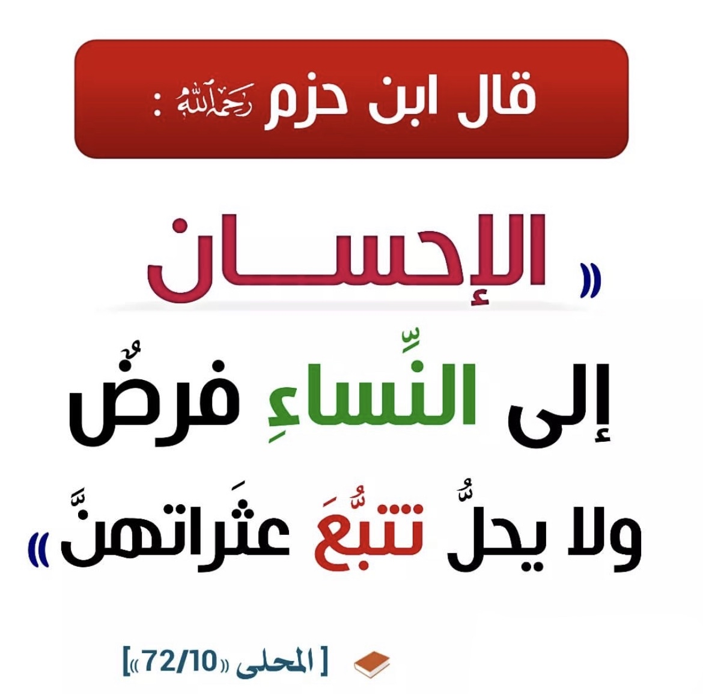
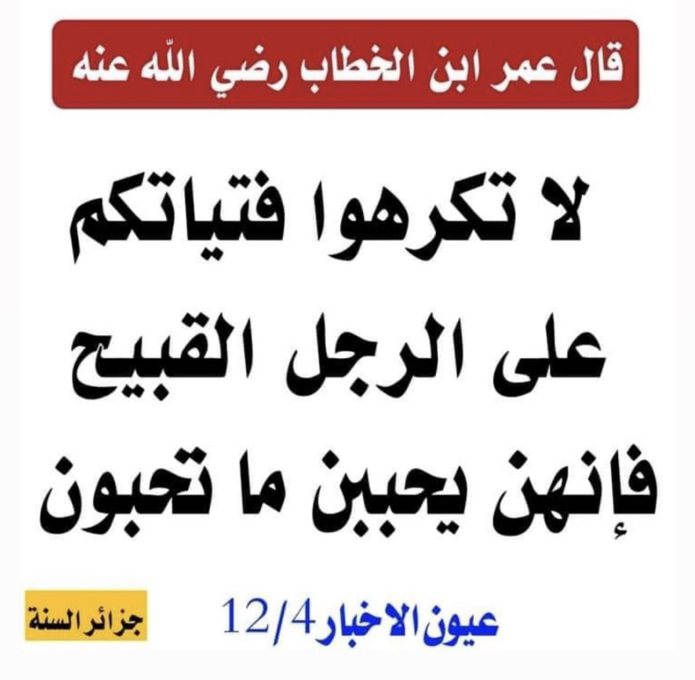

the Prophet, peace and blessings be upon him said to his Companion: “Do you have a mother?” He said, "yes." The Prophet said, “Stay with her,
for Paradise is beneath her feet.”
3104 سنن النسائي كتاب الجهاد الرخصة في التخلف لمن له والدة

وعن عائشة أنها قالت: " يا رسول الله هل على النساء جهاد؟ قال نعم عليهن جهاد لا قتال فيه: الحج والعمرة
Aa'isha (ra) reported: I said, “O Messenger of Allah, is Jihad a duty upon women?” The Prophet, peace and blessings be upon him, said, “Yes,
Jihad is a duty upon them in which there is no fighting: the Hajj and Umrah pilgrimages.”
2901 سنن ابن ماجه كتاب المناسك باب الحج جهاد النساء

Rasool-Allah (saw) said: I enjoin you to treat women well, for they are like captives to you. Verily, you have no right treat them otherwise,
unless they commit flagrant immorality. If they do so, then you may separate from their beds and strike them without causing pain,
but if they obey you then you may do nothing against them.
Source: Sunan al-Tirmidhī 1163, Grade: Sahih


It was narrated from Abu Hurairah (ra) that the Messenger of Allah(ﷺ) said:
"O Allah, bear witness that I have issued a warning concerning (failure to fulfill) the rights of the two weak ones: Orphans and Women.'"


Imam An-Nawwai said:
“honouring the Mother is more preferred than the Father”
“And it urges honouring the relatives and that the Mother has the most right of it (honouring her) and after the Mother is the Father”
Source: Sahih Muslim Bi-Sharh An-Nawwai


https://www.abuaminaelias.com/are-men-better-than-women-in-islam/